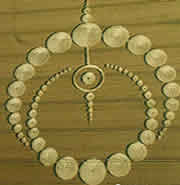

《探索生命的组合》
（一） 宗教起源于原始巫教，巫教起源于人类的原始，人类的原始又起源于什么呢？
生命来自虚空，它不是地球所固有的。现代欧美的科学前沿也是这样认为：生命可以存在于宇宙的任何地方。
生命又是怎样变成了人，人又是从哪儿来的呢？人是从水里来的，水里的"鱼"是空中的"鸟"变的。"鸟"又是从哪儿来的呢？当然是天上飞来的呀！
宇宙生命的立点不同，所处的或所经历的宇宙大自然环境的不同，从而形成了宇宙生命的开派。抽象的说就是：物种是宇宙生命存在的不同的表现形式，而生命形式的多样化，又决定于大自然的造化，亦即物种是大自然的产物。换一个角度说亦是：生命对大自然的适应形成了不同的物种。
宇宙生命的原始称为生命原图，她的"分子"估且叫生命原点是宇宙生命基因图的核心密码。这个核心密码我称之为原性，对于人类和脊柱动物来说，这个原性可简单的称之为性。在这里我们仅局限于研讨脊椎动物。就人类而言，这个原性可称为自性，亦可模糊的简称为自，或简称为性。
性的特征是空，它源于虚空。它是生命的本质，是基因图密码的核心。目前人类科学对基因图的研究仅限于其表现形式，亦即研究其表，尚未认识研究其里，当然，这有个由表及里的研究过程。
古经曰：自性本空。讲的就是这个生命本质的特征。
宗教原本是研究生命起源和归宿，以及生命在始终之间的过程中如何与大自然的和谐。宗教本是自然的产物，由于它夹杂了越来越多的人的意志，使其变得越来越势力，故而它早已失去了那纯"科学"、纯"学术"性的探讨和研究。正如大日如来所曰：佛法不入教！什么是佛法？佛法就是大自然变化的规律，这个规律本身就是自然。佛法这两个字和大自然这三个字是同义语。它是不以人的主观意志为转移的。三芷十二部八千四百卷经文，仅仅是从某些个角度对佛法亦即生命大自然的一些描述，或理解，但它们都不等于佛法，亦即不等于生命大自然。
科学是人类对大自然的研究，由其是对生命大自然的研究。宗教其最初含义亦是对生命大自然的研究。科学与宗教势不两立其分歧点是生命，其断桥亦是生命。但无论是科学还是宗教，一旦夹杂了人的主观意志，夹杂了人为的势力，其就会变为陈腐而没落。
中华古人在语言习惯上把生命或事物的顺向，即顺其自然的发展称为"然"。把逆向变化叫做"由"。由与然的变化之间出现了生。
宇宙生命的顺向进化叫自然，其逆向搏回叫自由。这里的"自"表生命的本质"性"。自然使生命息息不止，自由是生命的回归。正如"心月狐"所曰：
历炼风而生生路，湛湛自然定。
尘封缘随波自定，不息天生灭。
其上面一句即是入世法，下面一句则是出世法 
| 上 一 頁 | 下 一 頁 |